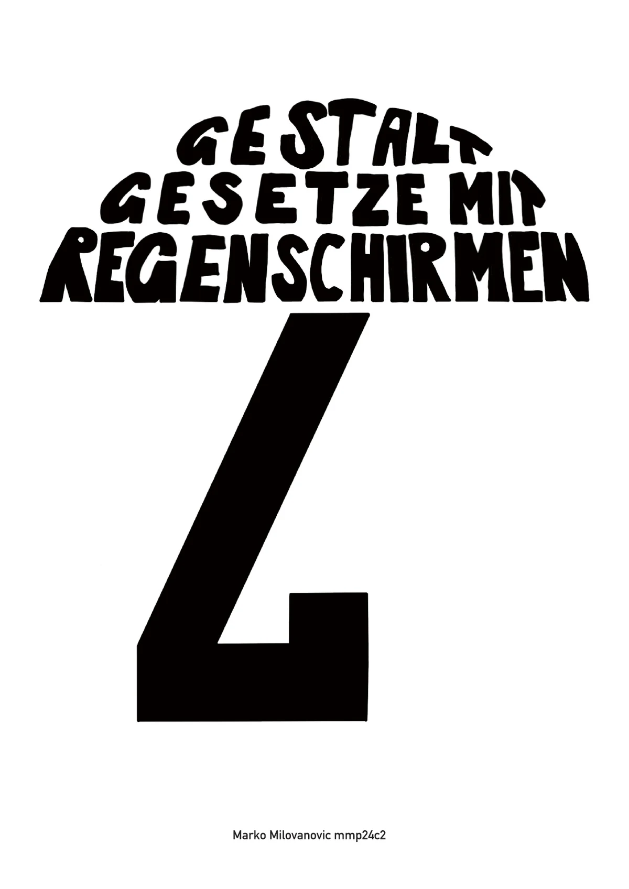
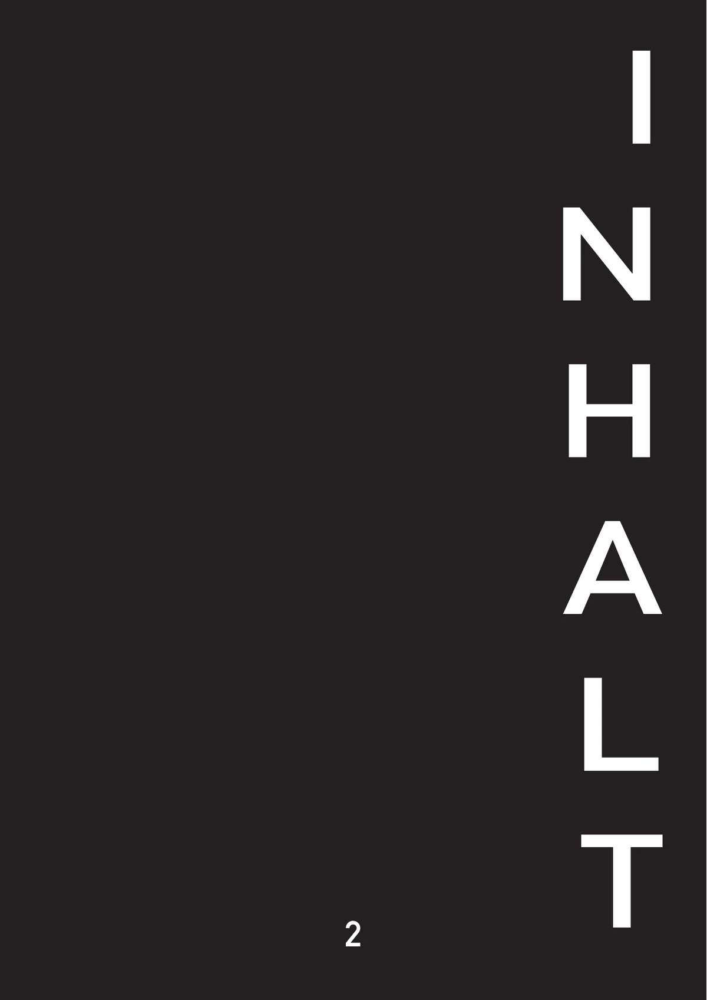

Gesetz der Ähnlichkeit
Elemente mit ähnlichen Formen, Farben oder Grössen werden von uns als zusammengehörige Gruppe wahrgenommen.
Editorial Design & Illustration
Mit den Pfeilen oder den Pfeiltasten durch die Broschüre blättern.


Das Projekt
Die Broschüre zeigt, wie die sieben Gestaltgesetze unsere visuelle Wahrnehmung beeinflussen. Als wiederkehrendes Gestaltungselement wählte ich den Regenschirm.
Der Regenschirm ist ein vertrauter und zunächst unspektakulärer Gegenstand. Durch unterschiedliche Anordnungen, Formen und Perspektiven eignet er sich jedoch gut, um die Prinzipien der visuellen Wahrnehmung verständlich darzustellen.
Die reduzierte Gestaltung in Schwarz, Weiss und Grau lenkt den Blick auf die Formen und ihre Beziehungen. Dadurch bleiben die einzelnen Gestaltgesetze klar voneinander unterscheidbar.
Die sieben Prinzipien
Elemente mit ähnlichen Formen, Farben oder Grössen werden von uns als zusammengehörige Gruppe wahrgenommen.
Elemente, die nahe beieinanderliegen, erscheinen miteinander verbunden, selbst wenn sie sich gestalterisch unterscheiden.
Formen und Linien, die einer erkennbaren Richtung folgen, werden als zusammenhängende Einheit wahrgenommen.
Unvollständige Formen werden von unserem Gehirn automatisch ergänzt und als geschlossenes Objekt erkannt.
Visuelle Eindrücke werden möglichst einfach, klar und geordnet wahrgenommen.
Bereits bekannte Formen können auch dann erkannt werden, wenn einzelne Informationen fehlen oder verändert wurden.
Unsere Wahrnehmung unterscheidet zwischen einem Objekt im Vordergrund und der Fläche, die dieses Objekt umgibt.
Arbeitsprozess
Zuerst entwickelte ich ein visuelles Konzept, mit dem sich alle sieben Gestaltgesetze anhand desselben Gegenstands erklären lassen.
Sämtliche Regenschirme und visuellen Elemente illustrierte ich auf dem iPad in Procreate. Dabei arbeitete ich bewusst mit reduzierten Formen und Graustufen.
In Adobe InDesign entwickelte ich das Seitenraster, platzierte Texte und Illustrationen und gestaltete daraus eine konsistente 20-seitige Broschüre.
Ergebnis
Das Ergebnis verbindet theoretische Gestaltungsgrundlagen mit einer eigenständigen visuellen Sprache. Die Illustrationen dienen dabei nicht nur als Dekoration, sondern machen jedes der sieben Gestaltgesetze direkt sichtbar und verständlich.
Nochmals durchblättern ↑